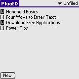
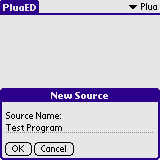
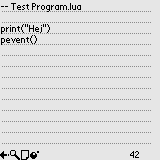
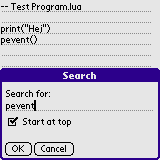
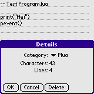
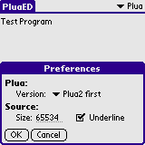

PluaED is a simple editor which can be used to edit Plua source files. Plua can read source files in DOC format or from Memo Pad. DOC writers usually costs money, Memo Pad can only edit source files up to 4096 characters.
PluaED overcomes some of these limitations - PluaED is free and can edit source files up to 65534 characters (if your device supports it).
PluaED uses the Memo Pad database to store it's source file. If you view a source file created by PluaED in Memo Pad the source file may be truncated - source files created by PluaED is easy recognisable as they start with '--' and ends in '.lua'.
PluaED is best used in conjunction with a keyboard. PluaED has been tested using the CitiPack IR 502 Keyboard but should be compatible with any Palm OS keyboard.
Installation of PluaED is like installing any other Palm OS program:
When the synchronization is done you will have a 'PluaED' icon in the Unfiled category on your Palm PDA. Feel free to move PluaED to another category.
Tap on the PluaED icon. The list contains the Memos currently present in the Memo Pad. A real memo (not a Plua source file) is prefixed with a small Note icon. A good practice would be to store your Plua source codes in a separate category in the Memo Pad, f.ex. in a category called Plua.
Tap on New to add a new source code. You will be prompted for the source code name. This name will be written to the first line of the source code prefixed with -- and with a .lua suffix. Plua expects source codes to follow this format. F.ex. if you name the source code file PluaTest the following will be written to the source code:
-- PluaTest.lua
In Plua this will be shown as PluaTest. If you need to change the name of the source file feel free to edit the first line. Just remember it must start with -- and end in .lua!
Write your program. In the bottom of the display you will see four icons. From left to right:
A character count is shown to the right.
Click on the search icon to bring up the search dialog. Enter a term to search for and check the Start at top checkbox to start the search from the top. If this box is not checked, the search will start from the current position.
Click on the details icon to bring up the details dialog. Here you can move the source code another category, delete the source code or just get a simple line count and character count statistic.
Depending on your device you may have to change the maximum size of a source code. For Palm OS 4 and better the default setting should be safe. Also, if you do not want the source code to be underlined you can remove the underline from the preferences form.
PluaED supports version 1 of Plua as well as version 2. Select the version to use in by the Version drop down list. There are 4 choices - Plua2 first, Plua1 first, Plua2 only and Plua1 only. These determine the version to use and in what order. F.ex, Plua2 first governs that Plua2 will be searched for first when launching Plua from within PluaED. If Plau2 is not found, then try Plua1. Plua1 only governs, that only Plua1 will be tried.
You find the Preferences option in the Main menu.